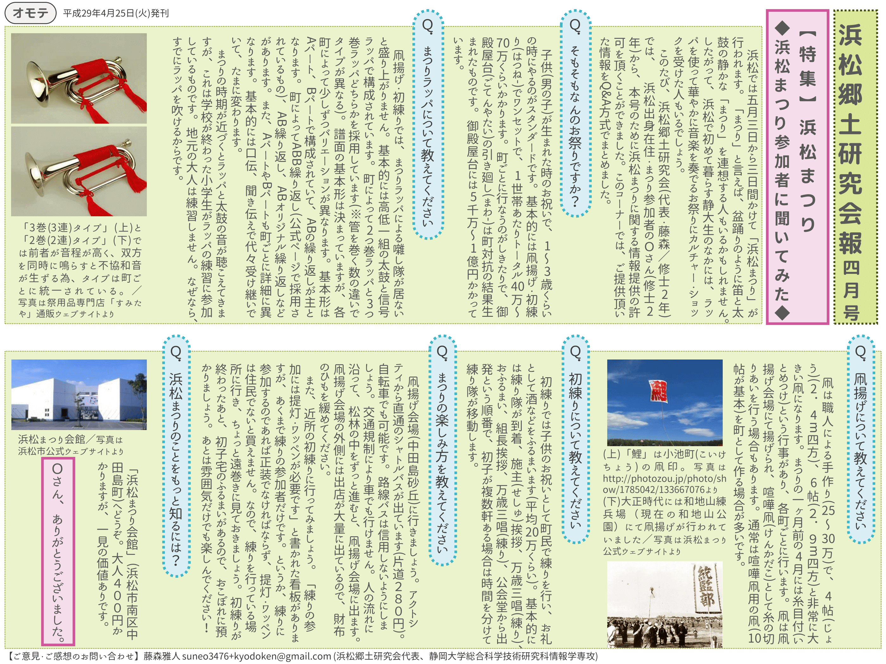
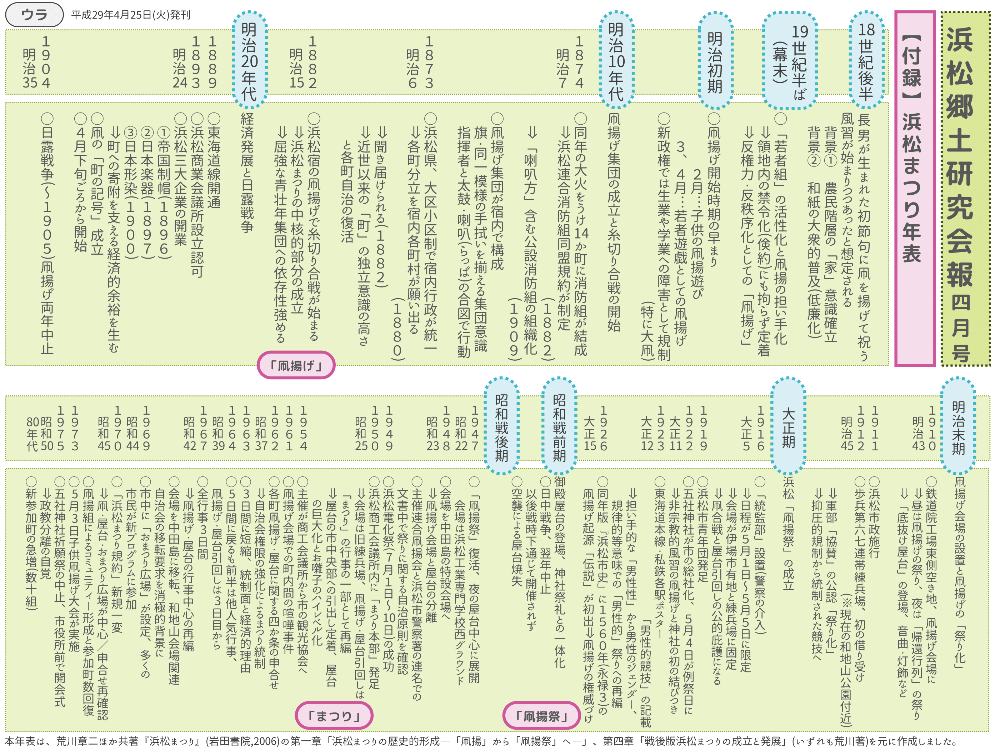

代表：藤森雅人（すねお） 連絡先：suneo3476[at]gmail.com 会員：3名（2017年4月現在）
2018-05-01更新 浜松郷土研究会報 四月号（2017年）
2017-04-14更新 浜松道案内 浜松駅北エリア 試験配布版
2017-01-13更新 浜松道案内 浜キャン富塚方面エリア
祭りの季節だなーと思ったので、去年作ったやつをアップしました。年表はその多くを元・静岡大学情報学部情報社会学科教授・荒川章二先生の仕事に頼っています。参考文献は荒川章二ほか共著『浜松まつり』（岩田書院、2006年）です。
 頑張って圧縮して1.2MBくらいだったと思う
888KBくらい